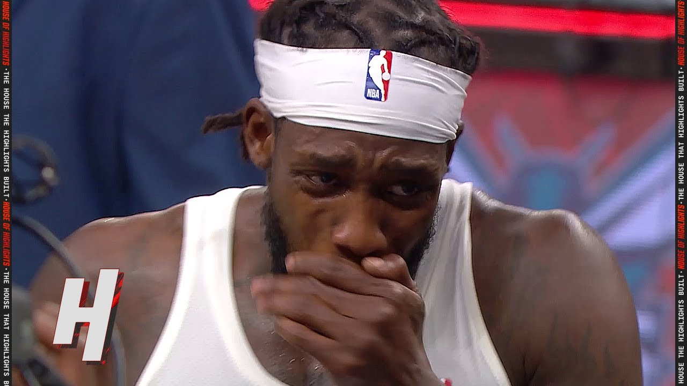
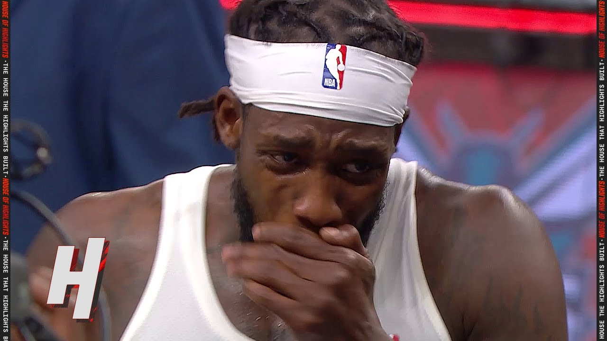

A little bit about me!
My intro
My name is Jacob LeRea and I am a sophomore at Syracuse University studying Broadcast and digital journalism. I am from Plainview, Long Island where I went to JFK High School. In my free time, I hang out with my friends and watch sports.
My handles
Instagram @jacoblerea Twitter @jacob_lerea
This is Instagram dot com.
~ Challenge: Why is my text maroon? ~
My text is maroon.
 https://larrybrownsports.com/wp-content/uploads/2022/04/patrick-beverley-crying.jpg

https://larrybrownsports.com/wp-content/uploads/2022/04/patrick-beverley-crying.jpg

Why I'm a great student
- Hard working
- Smart
- Devoted
- On time
Top 3 most famous people from my hometown
- Basketball Coach Seth Greenberg
- Rapper Hoodie Allen
~ Challenge: Read my poetry ~
In the halls of school he strides
A sophomore going through the tides
Goes to lectures, knowledge blooms
Goes home, naps in his room
Spends the nights working hard
All for him to have no money on his credit card.
This is one of my favorite quotes
"We have to do the impossible, but it is possible."- Kevin Garnett
These are more of my favorite books
- The Outsiders
- Dream Team
- When the Game Was Ours
Here's how I normally spend my weekend
~ Challenge: A very simple bar graph ~